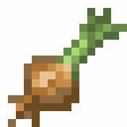

Foi no século 9 que o espaguete aportou na Sicília, levado pelos árabes em sua incursão de conquista da ilha.
As primeiras receitas do prato incluíam sardinhas pescadas ali mesmo no porto da região.
Só bem mais tarde o molho de tomate se consagrou como um parceiro clássico da massa. E assim dando vida a receita que todos
conhecemos e amamos. Agora vamos para a receita!
Ingredientes (10 porções)
macarrão espaguete
1 pacote de espaguete
água
1 litro de água
cebola

1 cebola pequena
alho
6 dentes de alho
óleo
óleo para fritar
molho de tomate
molho de tomate
mostarda
1 colher (sopa) de mostarda
pimente-do-reino
pimenta-do-reino
orégano
orégano seco
Modo de Preparo 40min
1:
Ferva a água e o óleo em uma panela.
2:
Depois de a água começar a borbulhar, adicione o pacote de espaguete.
3:
Faça o molho em uma outra panela: coloque o alho a cebola e o óleo para fritar.
4:
Quando o alho e a cebola estiverem fritando, acrescente o molho de tomate.
5:
Em seguida, adicione a mostarda, a pimenta-do-reino a gosto e o orégano.
6:
Depois que o molho estiver pronto, desligue o fogo.
7:
Mexa o macarrão de 5 em 5 minutos para não queimar nem grudar.
8:
Escorra o macarrão e adicione o molho e, para enfeitar, acrescente o manjericão que fica uma delícia.
 1 pacote de espaguete
1 pacote de espaguete
 1 litro de água
1 litro de água
 6 dentes de alho
6 dentes de alho
 óleo para fritar
óleo para fritar
 molho de tomate
molho de tomate
 1 colher (sopa) de mostarda
1 colher (sopa) de mostarda
 pimenta-do-reino
pimenta-do-reino
 orégano seco
orégano seco